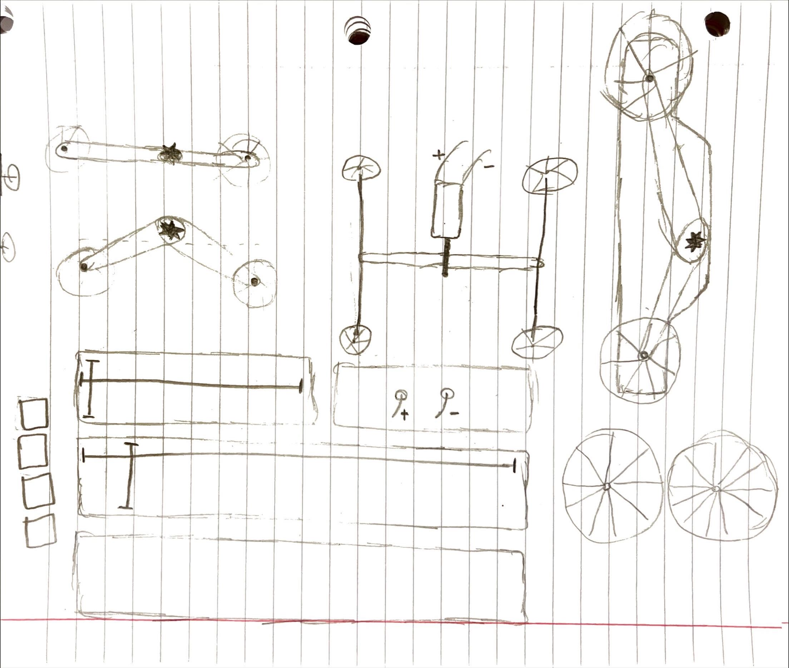
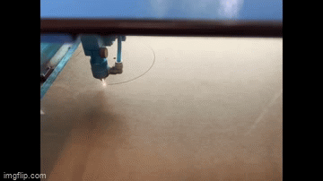
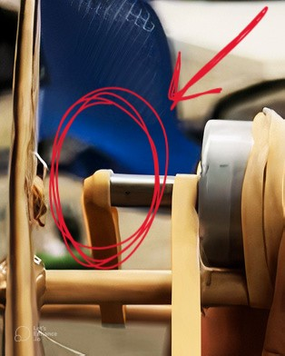
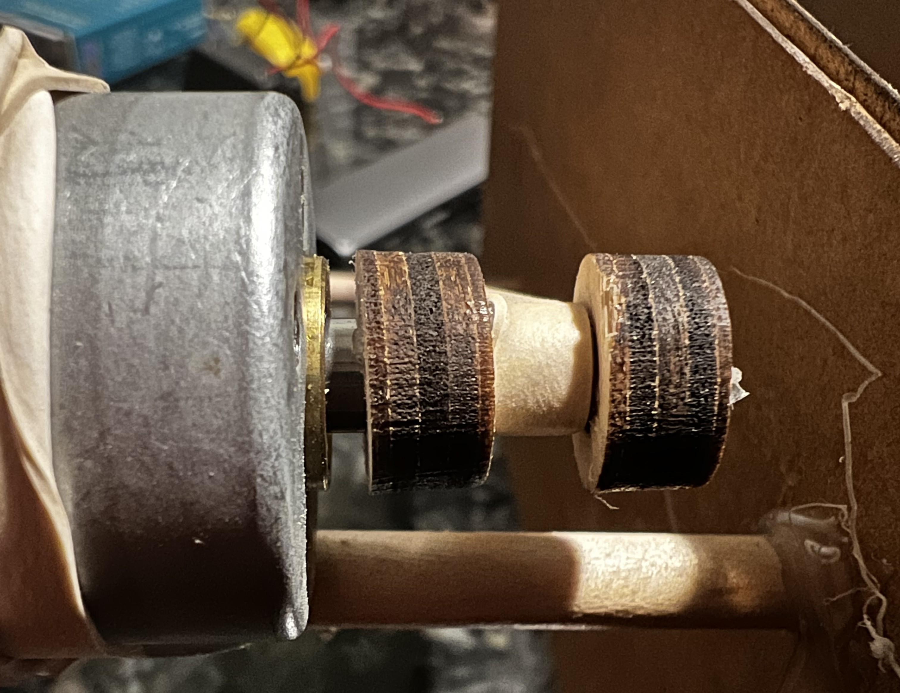

Mustafa Omran: Electronics & Tools
<!-- Assignment 1: Fusion 360 Tutorial -->
<hr style="border-top: dotted 5px;">
<h1>Assignment I: Kinetic Sculpture</h1>
<h6>For this assignment, students had to create a kinetic sturcture using a motor</h6>
<br>
<p>I knew I wanted to make a car so I sketched the different parts to get a rough idea of what I was looking for.</p>
<p style="text-align:center;"></p><br><br>
I then hopped onto Fusion 360 and made 2 rectangles and 4 wheels. Furthermore, I punctured holes the size of the baton stick (4mm) around 2/3 of the way down from the top of the rectangles. I then linked up all the pieces together and got the basic shape of the car. I used a pulley-type mechanism to make the wheels spin (showcased later on)<br>
<p style="text-align:center;"></p>
<br><br><p>&emsp;&emsp;&emsp;- Rectangle Dimensions (w x l): <strong>25cm x 15cm</strong></p>
<p>&emsp;&emsp;&emsp;- Wheel Dimensions (d): <strong>17cm</strong></p>
<p>&emsp;&emsp;&emsp;- Inner Wheel Dimensions (d): <strong>4mm x </strong></p><br><br>
<br><p>Final Result?</p>
<video controls width="400" height"500">
<source src="../images/Electronics&Tools/car_spinning.mp4" type="video/mp4">
</video>
<br><br><p>...Or so I though.</p>

<br><p>If we zoom in the video, it is seen that after spinning the motor for a certain amount of time, the rubber bands begin to fall off thus rendering the back wheel unusable</p>
<br><p>To combat this issue, I measured the motor with a caliper which turned out to have a 6mm diameter. I then went to Fusion 360 and made a 13mm diameter circle, extruded it by 4mm, finished the sketch, and used the "hole" feature to make a 6mm perforation in order to slide perfectly on the motor. Using the laser cutter to cut wood required a power of 100% with a speed of 12.5mm/s. Problem Solved!</p>

<video controls width="400" height"500">
<source src="../images/Electronics&Tools/cardemofinal.mp4" type="video/mp4">
</video>
<!-- video of final project -->
<hr style="border-top: dotted 3px;"><br><br><h3>Things I would Change</h3>
<p>&emsp;&emsp;&emsp;- <strong>Design</strong>. I find the design a bit to unpleasing as it looks like a car children make in kindergarden.</p>
<p>&emsp;&emsp;&emsp;- <strong>Power</strong>. During my testing on different surfaces, I found that the vehicle sometimes did not move due to a lack of power. To fix this, I would switch the current motor for a bigger one or add another motor for a total of two.</p>
<p>&emsp;&emsp;&emsp;- <strong>Grip</strong>. Adding on to the "power" point, adding more grip to the wheels would greatly increase the vehicle's ability to maneuver different surfaces</p>
<p>&emsp;&emsp;&emsp;- <strong>Materials</strong>. For this project, I used cardboard which while great for quick prototypes, is not great for final projects because of it's inferior durability</p>
<br><br>
<hr style="border-top: dotted 5px;">
<h3>Project Video</h3>
<video controls width="960" height"540">
<source src="../images/Electronics&Tools/cardemo1.mp4" type="video/mp4">
</video>
<p style="text-align: right;">&copy; 2022 Mustafa Omran</p>